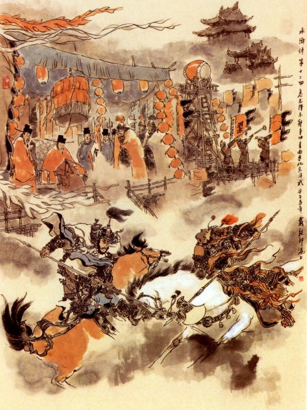
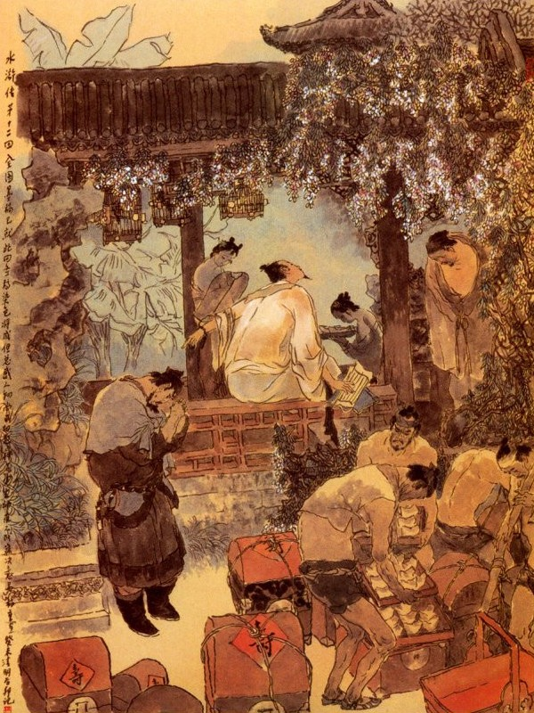
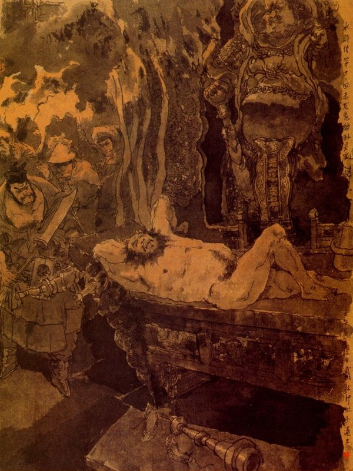

Khi đó Dương Chí và Chu Cẩn toan xông ngựa ra để đấu nhau thì bỗng thấy quan Đô Giám Văn Đạt thét lên rằng:
- Hãy khoan tay.
Bấy giờ Dương Chí và Chu Cẩn đều đứng dừng ngựa lại. Văn Đạt từ thượng sảnh chạy lại bẩm với Lương Trung Thư rằng:
- Dám bẩm ân tướng, vâng lệnh ân tướng, cho hai bên ra thử võ nghệ cũng chưa biết rằng bên nào thua được, song đao thương là vật vô tình xưa nay, chỉ dùng để giết thù đánh giặc. Nay quân tướng trong nhà tập thử với nhau mà cũng cứ dùng như thế, lỡ ra hoặc đến tàn tật, hay là thiệt đến tính mạng thế nào thì đối với việc quân có điều không lợi. Vậy dám xin ân tướng truyền cho tháo bỏ trên dưới ngọn thương mà bọc vải chấm vôi vào đó rồi cho hai tướng phải mặc áo đen, để trông vết trắng mà phân thua được thì hơn.
Lương Trung Thư khen là có lẽ, liền truyền cho hai tướng cứ theo thế để thi hành. Khi buộc thương thay áo xong đâu vào đấy rồi hai người lại lên ngựa để xông ra đấu. Hai bên đánh nhau ước được 4, 5 mươi hiệp thì trên áo Chu Cẩn đã be bét có tới 3, 4 mươi dấu trắng mà bên kia Dương Chí chỉ có một nốt trắng ở trên vai, Lương Trung Thư thấy vậy cả mừng, gọi Chu Cẩn đến trước sảnh mà bảo rằng:
- Quan trước cho ngươi làm chức quân trung Phí Bài, nhưng cứ xem võ nghệ của ngươi như thế thì phỏng đánh đông dẹp bắc làm sao cho được? Vậy từ nay ta cho Dương Chí thay vào chức ấy.
Trung Thư nói dứt lời thì quan Đô Giám Lý Thành đến trước bẩm rằng:
- Bẩm ân tướng, Chu Cẩn dẫu đánh thương có kém, song nghề cung nghề ngựa quen giỏi xưa nay, nếu ân tướng truất ngay như thế thì e nỗi lòng quân không phục, vậy lại xin cho hai bên thử đấu nghề cung nghề ngựa xem sao? Lương Trung Thư cho là phải, liền truyền cho Dương Chí và Chu Cẩn lại lấy cung tên ra đấu.
Hai người cùng vâng tướng lệnh, đoạn rồi Dương Chí đến chỗ treo cung chọn lấy một cây ngay ngắn, cầm ra tay nhẩy lên ngựa rồi ra trước Võ Sảnh ngồi lên trên yên ngựa, cúi mình mà bẩm với Trung Thư rằng:
- Bẩm ân tướng cung tên là việc võ, ngộ lỡ ra thương hại đến người thì bấy giờ làm sao? Xin ân tướng dạy trước cho.
Trung Thư nói:
- Đã là võ phu thí nghệ thì còn cần chi đến sự tổn thương, cho phép các ngươi cứ bắn, giỏi thì được mà thua chết thì thôi không ngại. Dương Chí vâng lệnh rồi quay ngựa đi ra trước trận.
Bấy giờ Lý Thành lại truyền cho hai bên mỗi người cầm lá chặn che tên rồi mới ra trận. Khi ra trận, Dương Chí bảo Chu Cẩn rằng:
- Bây giờ tôi nhường bác bắn tôi ba phát trước rồi tôi bắn lại sau.
Chu Cẩn nghe nói, trong bụng đã căm tức vô cùng, muốn sao bắn cho Dương Chí một phát suốt óc chết ngay thì mới thích. Về phần Dương Chí nguyên là một tay quan võ xuất thân cũng đã am hiểu các thủ đoạn xưa nay cho nên cũng không coi vào đâu cả.
Khi ấy trên Tướng Đài phất lá thanh kỳ thì Dương Chí vỗ ngựa cho đi về bên Nam rồi Chu Cẩn cũng buông ngựa đuổi theo. Đoạn rồi Chu Cẩn bỏ dây cương xuống yên ngựa mà tay tả cầm cung, tay hữu cầm tên, nhắm đằng sau Dương Chí bắn ra một phát Dương Chí nghe thấy tiếng dây cung bật đến banh một cái, liền tránh ngoắt ra một bên, thành thử mũi tên bắn vụt ra ngoài mất. Chu Cẩn thấy vậy, trong bụng hơi mừng, lại lấy ra một mũi tên nữa, nhè lúc Dương Chí đi gần mà nhằm giữa sau lưng bắn luôn một phát nữa. Dương Chí nghe biết tiếng tên thứ hai đã phát thì không né mình để tránh mà cầm cây cung ở tay gạt một cái đúng vào mũi tên kia bắn ngay ra đất.
Chu Cẩn thấy hai phát tên bắn ra đều vô ích cả thì trong lòng lại bồn chồn khó chịu, quây ra thấy con ngựa của Dương Chí đã đi hết đất giáo trường mà quay vòng trở lại chính sảnh, chàng bèn cùng quay ngựa lại mà đuổi theo. Bấy giờ lại lấy mũi tên thứ ba mà dùng hết sức bình sinh, nhằm thực đích xác vào chính giữa sau lưng Dương Chí mà bắn ra. Dương Chí biết vậy, vội ngồi trên yên ngựa, quay mình lại giơ tay lên bắt lấy mũi tên rồi phóng ngựa vào Diễn võ sảnh mà vất mũi tên của Chu Cẩn xuống. Lương Trung Thư trông thấy cả mừng, truyền lệnh cho Dương Chí ra bắn cho ba phát tên. Khi đó lá thanh kỳ ở trên Tướng Đài lại lay động, Chu Cẩn liền vất cung xuống đất, cầm lá chắn ra tay mà vỗ ngựa đi sang phía Nam. Dương Chí thúc hai chân vào vế thì con ngựa lốp đốp co cẳng chạy theo, đoạn rồi chàng giương cung bắn ở tay, bắn đứt đến tạch một cái. Đằng kia Chu Cẩn nghe tiếng tên bắn thì vội quay mình mà giơ lá chắn lên, để đỡ, té ra lại không thấy gì cả. Bấy giờ Chu Cẩn lại nghĩ trong bụng: "Anh này chắc chỉ biết đánh gậy mà không biết bắn, để đợi khi hắn bắn dứt phát nữa thì ta sẽ kêu to lên, thế thì ta đắc thắng".

Chu Cẩn vừa nghĩ xong thì ngựa đã đi đến đầu giáo trường bên Nam, chàng liền quay cương cho ngựa chạy trở lại. Con ngựa của Dương Chí thấy con ngựa kia quay đầu lại thì cũng ngoắt ngay lại đuổi theo. Dương Chí lấy một mũi tên trong túi ra rồi nghĩ một mình rằng: "Nếu ta bắn vào giữa chỗ lưng sau thì tất là hắn chết, ta với hắn không có cừu thù gì mà làm như thế thì không tiện, vậy ta cứ bắn cho hắn bị thương thôi cũng được". Nghĩ đoạn tay tả dang ra như đẩy núi Thái Sơn, tay hữu co lại như ôm đứa con đỏ rồi thấy cánh cung vòng lên, như vòng trăng khuyết mà mũi tên bắn vụt ra như sao đổi ngôi vậy. Bây giờ nói còn chậm, chứ bấy giờ thì rất nhanh, mũi tên ấy bắn ra, Chu Cẩn chưa kịp trở mình, đã bị trúng ngay vào cánh tay bên tả, ngã lăn xuống đất, còn con ngựa thì chạy thộc ra đằng sau Diễn Võ Sảnh.
Dương Chí vẫn thần sắc tự nhiên như thường, xuống ngựa đến trước sảnh lạy Lương Trung Thư mà nhận chức. Chợt có người ở dưới thềm bên tả, chạy đến kêu lên rằng:
- Khoan khoan hãy nhận chức, để tôi với anh thử đấu một lúc xem sao?
Dương Chí nghe nói bèn quay lại nom thấy người ấy đứng trước mặt Lương Trung Thư mà bẩm rằng:
- Bẩm ân tướng, Chu Cẩn bị yếu mới dậy, cho nên đến nỗi bị thua Dương Chí, nay tiểu tướng dẫu bất tài, xin cho ra đấu với Dương Chí một keo. Bằng có kém thua một tý nào, xin nhường ngay chức của tiểu tướng cho Dương Chí, tiểu tướng không hề dám oán hận điều chi.
Lương Trung Thư trông ra thì chính là Chánh Bài Quân, ở Đại danh phủ tên là Sách Siêu, vốn người nóng tính xưa nay, việc quốc gia thường hay tranh khí mà xốc vác tiên phong, cho nên ai cũng gọi tên là Cấp Tiên Phong Sách Siêu. Khi ấy Lý Thành ở trên Tướng Đài nghe thấy vậy thì cùng xuống trước cửa sảnh mà bẩm với Lương Trung Thư rằng:
- Dám thưa ân tướng, ân tướng đã cắt Dương Chí ra đây thì tất nhiên là người giỏi, không phải là tay Chu Cẩn đối địch. Vậy để cho Chánh Bài Quân Sách Siêu đọ lại thì mới biết rõ được võ tài hơn kém. Xin ân tướng cho phép thế mới công bình.
Lương Trung Thư nghe nói, nghĩ thầm trong bụng rằng: "Ta cốt đài cử cho Dương Chí, thế mà chúng tướng lại không phục, vậy ta cứ để cho hắn đánh đổ Sách Siêu thì tất nhiên các cậu dẫu chết cũng không còn oán hận điều chi được người". Nghĩ đoạn quay ra bảo Dương Chí rằng:
- Nếu vậy thì ngươi theo quân kho ra mà chọn lấy quân khí rồi cho mượn chiến mã của ta, để mà ra đấu, nhưng phải cẩn thận, chớ coi thường mới được.
Dương Chí vâng lời tạ ơn rồi trở ra sắm sửa. Bấy giờ Lý Thành cũng gọi Sách Siêu ra mà bảo rằng:
- Anh phải biết, anh không như người khác được, lúc nãy Chu Cẩn là học trò anh bị thua rồi, nay nếu anh lại lỡ ra thế nào thì họ không còn coi đám quan quân ở Đại danh phủ này ra gì nữa đâu. Tôi có con ngựa chiến, ra trận đã quen và các thứ đai giáp đây, cho anh mượn mà dùng, tất phải dụng tâm cẩn thận, chớ để mất nhuệ khí mà nguy.
Sách Siêu nghe lời, tạ ơn Lý Thành mà ra đi sắm sửa đai giáp.
Khi đó Lương Trung Thư đứng dậy, đi ra trước thềm rồi các quân hầu mang ghế chéo bắc ra chỗ bao lơn Nguyệt Đài để Trung Thư ngồi vào tả hữu đứng dàn ra hai bên rồi có một tên cầm tàn đứng che ở đằng sau ghế.
Bấy giờ ở trên Tướng Đài phất hồng kỳ ra hiệu thì hai bên đều nổi chiêng trống vang lừng, đoạn rồi tiếng trống dứt thì tiếng pháo nổ lên mà bên kia Sách Siêu bên này Dương Chí, đều phất ngựa ra đứng dưới cờ mặt trận. Hồi trống thứ hai nổi lên, trên Tướng Đài phất lá Bạch kỳ thì quan quân đâu đấy đứng im phăng phắc một lượt.
Đoạn rồi lá thanh kỳ trên Tướng Đài lay dộng rồi chiến cổ thứ ba nổi lên thì thấy cửa trận tả rẽ ra, tiếng nhạc kêu xoang xoảng rồi quan Chánh Bài Quân Sách Siêu cưỡi con ngựa bạch của Lý Đô Giám tay cầm quân khi đi ra giữa trận vẻ rất oai nghiêm. Bên kia cửa cờ hữu trận cũng mở ra rồi Dương Chí tay cầm cây thương, cưỡi con ngựa đỏ Thiên Lý tiên phong của Lương Trung Thư, nhạc khua xoang xoảng đi ra, đứng giữa trận địa, nom rất hùng dũng.
Bấy giờ quân kỳ bài cầm cờ lệnh, vỗ ngựa đến trước trận mà tuyền lệnh rằng:
- Vâng lệnh tướng công, truyền cho hai viên đều phải dụng tâm cẩn thận, bằng có sơ suất hớ hênh thì là có phạt. Nếu ai đắc thắng tất có thưởng to.
Hai người được lệnh, đều thúc ngựa ra giáp trận với nhau. Sách Siêu ra dáng tức giận; Múa cây phủ trong tay mà đánh Dương Chí trước, Dương Chí đỡ thương lên đón rồi hai bên hết sức bình sinh đánh nhau tới 50 hiệp mà không rõ được thua. Lương Trung Thư ở trong Nguyệt Đài, ngồi ngây ra xem hai người đấu võ, quan quân đứng ở hai bên cùng các hàng quân sĩ trong trận, đều nom nhau mà thì thầm rằng:
- Chúng ta theo việc quân đã lâu cũng có nhiều phen ra trận nhưng chưa từng thấy hai tay hảo hán như thế bao giờ?
Lý Thành, Văn Đạt đứng trên Tướng Đài, nom xuống đều phải vỗ tay khen là giỏi quá! Văn Đạt lại e trong hai người, hoặc lỡ ra bị đau đớn thiệt hại, liền bảo kỳ bài quan giơ cờ hiệu cho hai bên dừng lại. Khi đó trên Tướng Đài nổi hiệu thanh la lên, song Dương Chí, Sách Siêu đương hăng đánh để tranh công, không ai chịu dừng tay cả. Quan kỳ bài thấy vậy, phải quay ra trước trận mà thét lên rằng:
- Hai tay hảo hán hãy khoan tay, tướng công có lệnh.
Dương Chí, Sách Siêu nghe lệnh mới chịu thu tay thương phủ mà xóc ngựa quay về bản trận, đứng ở dưới cờ để đợi lệnh. Bấy giờ Lý Thành, Văn Đạt ở Tướng Đài, chạy xuống Nguyệt đài bẩm với Lương Trung Thư rằng:
- Bẩm Tướng Công, võ nghệ của hai người ấy, đều có thể trọng dụng được lại.
Lương Trung Thư nghe nói cả mừng, truyền lệnh cho Kỳ Bài Quân đòi Dương Chí, Sách Siêu vào rồi sai phòng Quân Chánh thảo văn án cho hai người thăng chức Đề Hạt. Hai người vâng lệnh lạy tạ Lương Trung Thư rồi trở ra thay bỏ các đồ nhung phục, Trung Thư lại gọi hai người vào làm lễ tương kiến với nhau mà dự vào ban Đề Hạt. Đoạn rồi Lương Trung Thư cùng các quan viên lớn nhỏ cùng ăn tiệc ở Diễn Võ Sảnh, mãi đến mặt trời xế hôm mới tan. Khi trở ra về thấy các phụ lão hai bên hàng phố, đều dắt dúm đi theo ra dáng vui mừng hớn hở, Lương Trung Thư ngồi trên mình ngựa hỏi rằng:
- Các người, dân chúng có việc gì mà vui mừng như thế?
Bọn già lão bẩm rằng:
- Từ khi chúng tôi sinh ra ở Bắc Kinh tới nay, chưa hề bao giờ được thấy hai người hảo hán địch thủ như buổi hôm nay, bởi thế chúng tôi đều lấy làm vui mừng quá đỗi.
Trung Thư nghe nói, trong bụng càng lấy làm thích. Khi về tới phủ, các quan viên đều bái tạ Trung Thư rồi ai về nhà nấy, duy còn một mình Dương Chí là lưu lại ở phủ Đại Danh mà hầu hạ Trung Thư, sớm khuya rất là cần mẫn. Từ đó Lương Trung Thư lại càng thương yêu Dương Chí, các quan viên gần đó cũng dần dần kéo đến làm quen mà Sách Siêu thấy Dương Chí võ nghệ cao cường thì cũng dốc lòng kính phục.
Đời người như cái con quay.
Khi im phắc khi xoay xoay tròn
Bây giờ chim đã vào ngàn
Biết rằng sau có lạc đàn nữa không?
Sớm hôm thay đổi, ngày tháng xoay vần, thấm thoát không bao mà xuân qua hạ lại. Một hôm vào khoảng giữa tết Đoan Ngũ, Xài phu nhân bảo với Trung Thư rằng:
- Tướng Công ngày nay làm đến chức Thống Súy, cầm quyền quốc gia ở trong tay, vậy cái công danh phú quý ấy, ở đâu mà đến nhỉ?
Lương Trung Thư đáp rằng:
- Tôi lúc thuở nhỏ có theo đòi kinh sử, có biết ít nhiều đạo lý, lẽ đâu lại không biết cái công danh phú quý này là của Thái Sơn cất nhắc lên cho.
- Tướng Công đã biết như vậy mà sao lại quên ngày Sinh Nhật của phụ thân tôi?
- Có khi nào quên được. Đến hôm Rằm tháng sáu đây là Sinh Nhật của Thái Sơn, hiện tôi đã sai người mua sắm mười vạn kim ngân châu báu, để làm lễ thọ từ tháng trước, chỉ nay mai mua xong là mang dâng đó thôi. Chỉ có một điều tôi còn phân vâng chưa quyết là năm trước đã sai người đem bao nhiêu kim ngân châu báu để dâng, bất đồ đi đến giữa đường, bị quân gian cướp lấy, đến nay truy nã chưa ra, vậy thì bây giờ biết sai ai đưa đi cho chắc được.

- Hiện nay ở trong phủ biết bao nhiêu quan quân ở đó, Tướng Công há lại không chọn được một người tâm phúc mà sai khiến hay sao?
Lương Trung Thư nói:
- Nhưng mà chuyện ấy còn hơn một tháng trời nữa, để bao giờ mua sắm xong rồi, sẽ chọn người mang đi cũng được, vội gì? Phu nhân cứ an tâm, thế nào tôi cũng chu tất được.
Nói về tỉnh Sơn Đông, phủ Tế Châu, huyện Vận Thành, có một quan Huyện mới, tên là Thời Văn Bân, mới đến nhậm ở đó, một hôm cho hai viên Tuần Tập Đô Đầu là Chu Đồng và Lôi Hoành đến mà bảo rằng:
- Ta nghe trong hạt Tế Châu đây, có một bọn cướp ở Lương Sơn Bạc, xưa nay vẫn thường giết người lấy của mà cự địch cả quan quân. Vả lại e các đám trộm cắp ở hương thôn cũng vùng vẫy theo lên thì đảng ác tất to mà khó trị. Vậy nay hai các ngươi phải chịu khó đem đám thổ binh, một đằng đi ra cửa tây, một đằng đi ra cửa đông, để chia đường tróc nã giặc cướp đem về giải nộp ở đây mà không được quấy nhiễu dân gian chi cả. Ta thấy nói ở trên ngọn núi thuộc về Đông Khê có một thứ cây Đại hồng mà không đâu có nữa, vậy các ngươi đi về phải đem theo mấy cái lá cây để ta biết làm tin mới được. Nhược bằng không có cái lá ấy thì tất là man trá, ta sẽ trọng phạt không tha.
Hai người Đô Đầu này, một người là Đô đầu Mã binh coi 24 tên quân và ngựa cùng 20 tên thổ binh; Một người là Đô đầu Bộ binh, coi 20 tên thương đầu mục và cũng có 20 tên thổ binh nữa. Người Đô đầu Mã binh họ Chu tên Đồng, mình cao hơn tám thước, râu dài thước rưỡi coi như râu hùm, mặt dài mắt sắc, hơi giống tướng mạo Quan Vân Trường là một nhà phú hộ ở bản xứ, nhân vì có lòng trọng nghĩa khinh tài, cho nên thường kết giao với đám giang hồ hảo hán mà học được mọi ban võ nghệ; Người Đô đầu Bộ binh tên là Lôi Hoành, mình dài bảy thước rưỡi, mặt mũi đỏ tía, ria râu xòe như cái quạt, sức vóc khỏe mạnh hơn người, thường nhảy qua được những nơi hào rãnh rộng chừng 3, 4 trượng, cho nên người ta thường gọi ông là Sáp Sí Hổ, nguyên là một tay thợ rèn xuất thân cũng hơi có lòng nghĩa khí, nhưng tâm địa thì vẫn hẹp hòi.
Hôm đó hai người vâng lệnh Tri huyện rồi trở về điểm các thổ binh của mình mà chia đường đi tuần canh. Lôi Hoành dẫn 20 tên đi ra cửa đông, xét nét vùng quanh các thôn xã rồi trở về ngọn núi ở thôn Đông Khê, nhặt được nắm lá Đại hồng rồi lại đi xuống thôn để về nhà Bảo Chính.
Bấy giờ trời đã tối, Lôi Hoành cùng quân lính, đi được 2, 3 dặm đường, bỗng đến một tòa miếu Linh Quan, thấy cửa còn bỏ ngỏ, Lôi Hoành liền bảo với chúng rằng:
- Cái miếu này làm sao mà không đóng cửa? Hay là có trộm cắp nấp ở trong này chăng? Ta thử vào soi ở đó xem sao?
Chúng vâng lời, cùng nhau đem đuốc vào soi thì thấy trên án thư một đại hán cổi trần trùng trục, cuộn áo làm gối mà nằm gáy khò khò ở đó. Lôi Hoành thấy vậy, đoán chắc là một tay trộm cướp nằm đó, lấy làm khâm phục Huyện quan là thần minh, liền quát một tiếng, sai thổ binh đổ xô vào trói lại.

Anh kia nghe tiếng, toan vùng trở dậy thì đã bị thổ binh lấy thừng trói chặt cánh tay mà dong ngay về thôn Bảo Chính.
Buồn tênh cho khách giang hồ,
Bỗng dưng sao lại lần mò đến đây.
Canh trường giấc điệp còn say,
Bừng con mắt dậy mới hay giật mình.
Hóa công cũng giống vô tình,
Làm chi sự bất thình lình trêu ai?
Rồi đây quấy nước đục trời,
Còn thân còn để cho đời biết tay.
Lời bàn của Thánh Thán
Người xưa có nói: Vẽ cung điện Hàm Dương thì dễ, vẽ Sở nhân đốt lửa thì khó: Vẽ ngàn dặm thuyền bè thì dễ, vẽ nước trào tháng Tám thì khó. Nay đọc truyện Thủy Hử đến hồi Đông Quách tranh công, tả cho có khác vẽ lửa vẽ trào, do một ngọn tuyệt bút. Vì Lương Trung Thư rất yêu Dương Chí, nhằm vào sau đây dùng vào việc Sinh Nhật Thái Sơn, nên yêu để mà sau ký thác việc trọng đại cho nên trước phải lưu ý đề cử làm quan mà cần phải mở cuộc đấu võ ở Giáo Trường cho cônh chúng không còn tị nạnh. Lúc đầu chỉ một Chu Cẩn xin đấu thì lược tả đấu thương, tường thuật đấu cung mã cũng gọi là một cuộc đấu tài hứng thú, thế mà tác giả lại đem cái tài không bờ không bến, còn diễn ra cuộc đấu võ khác nữa, cho xuất hiện ra một Sách Siêu, chợt thấy ở dưới thềm bên tả xin đấu sức đua tài, khiến Lương Trung Thư thấy sự xảy ra ngoài ý định. Bấy giờ hai người từng giao thủ mà Lương Trung Thư lưu ý Dương Chí, muốn cho thắng trận, mới cho mượn chiến mã bên kia Lý Thành cũng giúp Sách Siêu mà cho mượn chiến mã, kể ra cuộc đấu có phần sôi nổi gay go. Trước khi hai tay chưa từng cử động tý chút, đã làm cho độc giả chú ý, khác dạng kinh hồn động phách trừng mắt, để tâm chờ đợi, thế mà còn gác chuyện đấu võ, lại tả ra Lương Trung Thư chạy tới Nguyệt Đài, nào đặt tiền thưởng, rượu ngon, trịnh trọng ngồi dưới tàn che quạt rũ, đợi cho mấy lần pháo nổ, trống khua mấy lần phất lên Cờ Đỏ, Cờ Vàng, Cờ Xanh, Cờ Trắng rồi sau mới tả ra hai tay hảo hán xuất trận, khiến độc giả đợi chờ, để tâm trừng mắt, sao khỏi kinh hồn mất vía vì một cuộc tranh công? Đợi đến khi hai người chiến đấu, chỉ tả một câu chính văn: Đánh đến 50 hiệp không phân thắng phụ. Tả đến đấy rồi tiếp làm cho Lương Trung Thư ngây ngô, quan quân cũng ngây ngô, khắp giáo trường không ai nói một câu, chỉ Lý Thành, Văn Đạt hai người luôn mồm khen giỏi, khiến độc giả nghĩ bụng, khắp Giáo Trường ai cũng chú trọng hai tay với chiến mã binh khí, chẳng mình Trung Thư ngây ra, đến ngay độc giả cũng ngây ra, đến khi ra lệnh thu quân, còn tả một câu: Hai hảo hán còn muốn tranh công, không chịu ngừng lại. Hành văn đến thế, khác nào vẽ lửa vẽ trào? Trời sinh tuyệt bút tự có bút mực, chưa có văn này, tự có văn này, chưa có phê bình này vậy. Hỡi ôi! Thú vui thiên hạ, không gì bằng đọc sách, đọc sách không gì bằng Thủy Hử, lại còn nỡ nào chẳng cùng với khoái nhân trong thiên hạ đời sau bên rượu dưới đèn, để tán thưởng áng văn như vậy!
Một hồi sách này, ngu phu đọc đến thì cho rằng Đông Quách tranh công, để định phận cho Dương Chí, một sự long trời lở đất xảy ra, có hay đâu chỉ nhằm vào việc Sinh Nhật sau đây mà ký thác Dương Chí, cho nên bỗng không nảy ra một sự như lâu đài lừng lẫy giữa trời, chỉ do Lương Trung Thư yêu Dương Chí vậy. Cho nên trong khi tả Lương Trung Thư lưu ý Dương Chí là những chỗ văn tuy ít, song là chính mà tả Chu Cẩn, Sách Siêu tỷ thí, văn tuy nhiều rực rỡ dọc ngang lại là phụ bút, nếu đọc không phân ra chủ khách chính phụ thì không nhận được ra những cái hay.